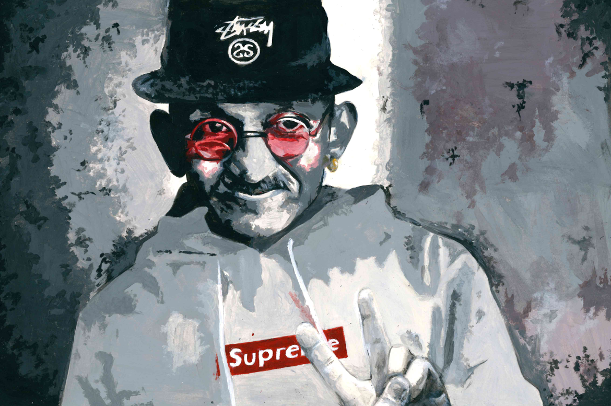
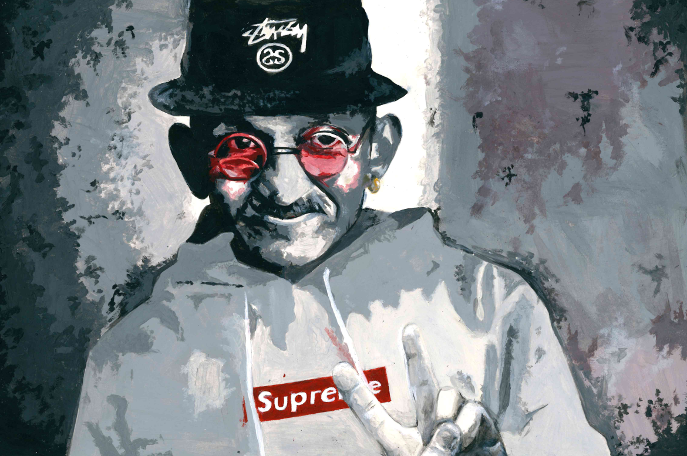
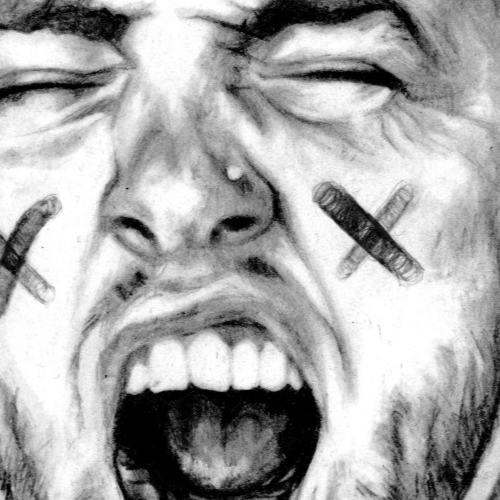
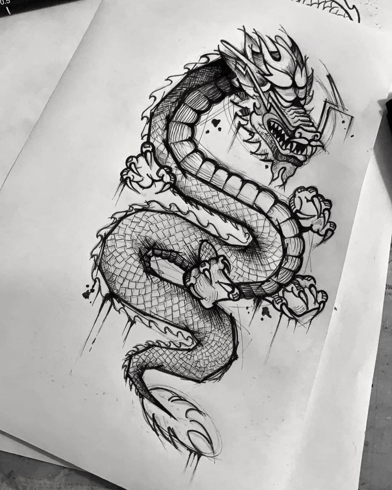
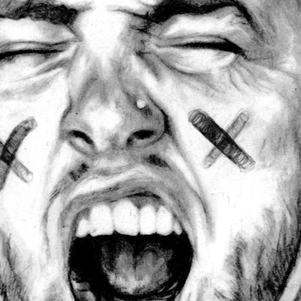
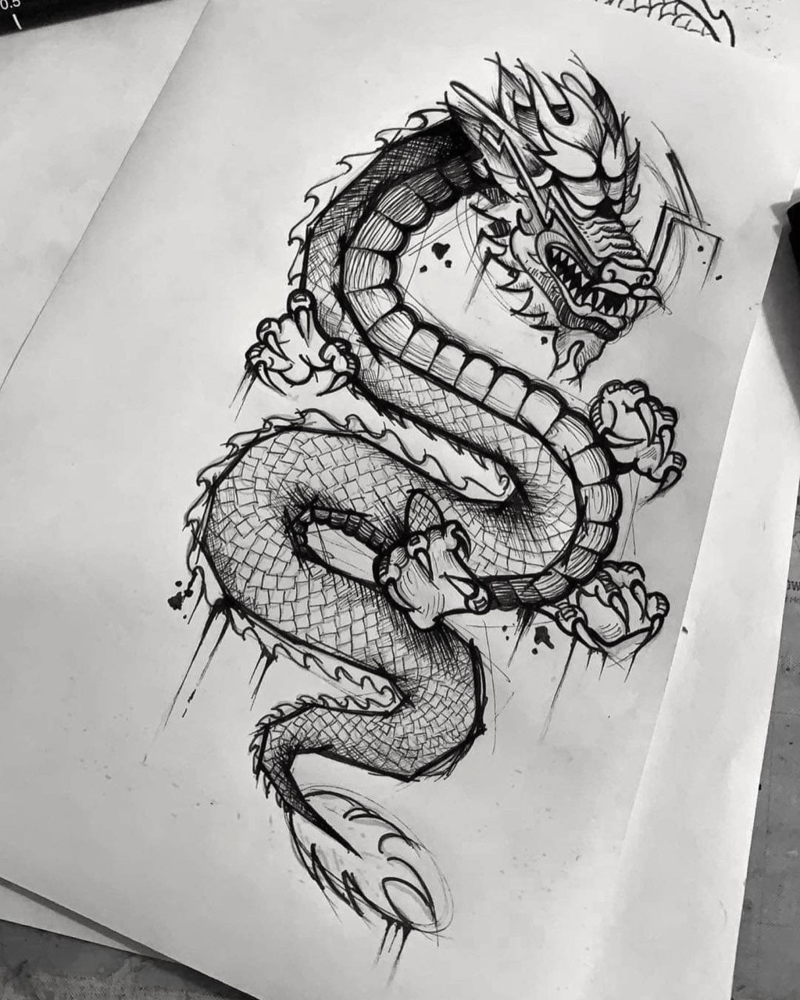

ABOUT
Recognised as Casavarts, or Chloe Savory, I am a self taught artist from the UK, exploring the realms within various paint, pencil and ink mediums. Particularly notorious for a blend of pop culture, streetwear, consumerism and politics, my style is ever adapting into a fun, bold yet also dark expression of my current interests and personal depictions of the world around me.
My style truly began to take shape within my sixth-form years, when I started to properly establish not only my artistic abilities, but also my perspective of the reality in which we live. A lot of my work developed into a reflection of my feelings towards consumerism, materialism, war, objectification, climate change and drug use.
I am currently operating as a resident tattoo artist at Magnum Circus Tattoo studio, located in Cheltenham.
TATTOOS
// MY WORK


MY ART
Aside from tattoos, I create art in my spare time. My work reflects my ideologies surrounding society in the modern day, using various mediums. Most of the works below are available to be bought as prints.
CASAVARTS
// ART PIECES

 

 


